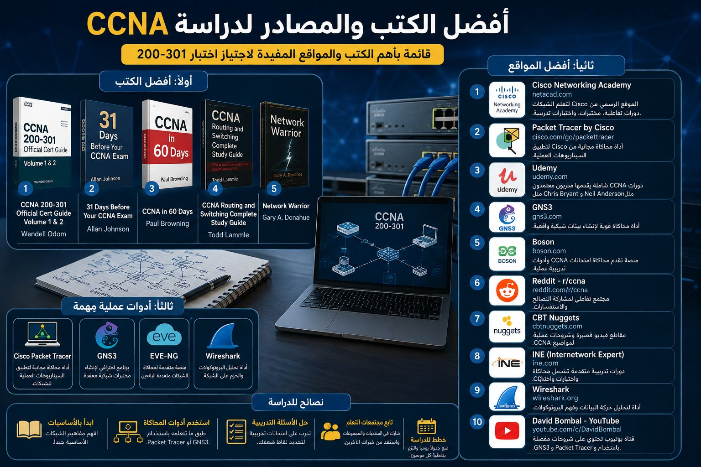

أفضل الكتب والمصادر لدراسة CCNA في 2026: دليل شامل للتحضير لاختبار 200-301

الاستعداد لشهادة CCNA – Cisco Certified Network Associate لا يعتمد على مشاهدة دورة فيديو واحدة أو حفظ مجموعة من أوامر Cisco.
لتحضير فعلي، تحتاج إلى الجمع بين:
مرجع نظري + منهج الاختبار الرسمي + تطبيق عملي + Labs + مراجعة + اختبارات تجريبية.
وهنا تظهر المشكلة التي تواجه كثيرًا من المتدربين:
ما أفضل مصادر CCNA؟ وأي الكتب ما زالت مناسبة للاختبار الحالي؟
خصوصًا أن الإنترنت يحتوي على كتب ومقالات ودورات مرتبطة بإصدارات قديمة من CCNA لم تعد مطابقة بصورة كاملة للامتحان الحالي.
في هذا الدليل ستتعرف على أفضل الكتب والمصادر والمواقع والأدوات لدراسة CCNA في 2026، مع توضيح وظيفة كل مصدر ومتى تستخدمه، وطريقة بناء خطة مذاكرة تجمع بين الجانب النظري والتطبيق العملي.
إذا كنت لا تعرف تفاصيل الشهادة حتى الآن، ابدأ أولًا من دليل ما هي شهادة CCNA ولماذا تعتبر مهمة في عالم الشبكات؟.
هذه أول نقطة يجب التأكد منها قبل شراء كتاب أو الاشتراك في دورة.
حتى أغسطس 2026، الاختبار الحالي هو:
200-301 CCNA v1.1
وتوضح Cisco أن هذا الاختبار يقيس المهارات في ستة مجالات رئيسية:
Network Fundamentals
Network Access
IP Connectivity
IP Services
Security Fundamentals
Automation and Programmability
وسيظل CCNA v1.1 متاحًا حتى 2 فبراير 2027، بينما يبدأ اختبار CCNA v2.0 في 3 فبراير 2027.
لذلك:
| موعد اختبارك | النسخة التي تستعد لها |
|---|---|
| حتى 2 فبراير 2027 | CCNA 200-301 v1.1 |
| من 3 فبراير 2027 | CCNA 200-301 v2.0 |
إذا كنت تدرس بالفعل v1.1 وتخطط للاختبار قبل الموعد المذكور، فلا يوجد سبب لإيقاف الدراسة وانتظار الإصدار الجديد؛ Cisco نفسها توصي المتدربين الحاليين باستكمال مسارهم.
لا يوجد مصدر واحد يغطي كل شيء بأفضل صورة.
الأفضل استخدام مجموعة مصادر، بحيث يكون لكل مصدر دور محدد.
مقارنة أفضل مصادر CCNA
| المصدر | الاستخدام الأساسي | الأهمية |
|---|---|---|
| Cisco Exam Topics | معرفة ما يدخل الاختبار | أساسي جدًا |
| Official Cert Guide | الدراسة النظرية المتعمقة | أساسي |
| 31 Days Before Your CCNA Exam | المراجعة النهائية | ممتاز |
| Portable Command Guide | مراجعة أوامر Cisco | ممتاز |
| Cisco Networking Academy | تعلم منظم وتطبيق | ممتاز |
| Packet Tracer | Labs للمبتدئ والمتوسط | أساسي |
| GNS3 | محاكاة أكثر تقدمًا | متقدم |
| EVE-NG | Labs متعددة الأنظمة | متقدم |
| Wireshark | فهم حركة الـPackets | مهم |
| Practice Exams | قياس الجاهزية | مهم قبل الاختبار |
القاعدة المهمة: لا تستخدم كتابًا بدل الـLabs، ولا تستخدم Labs بدل فهم النظريات.
تحتاج الاثنين.
1. CCNA 200-301 Official Cert Guide Library – Second Edition
إذا أردت اختيار مرجع كتابي رئيسي واحد، فهذا هو أقوى اختيار حاليًا.
المؤلف الرئيسي:
Wendell Odom
وصدرت النسخة الثانية من Official Cert Guide في 2024، وتشمل Volume 1 وVolume 2، وهي النسخة الحديثة من دليل Cisco Press المرتبط بـ200-301.
لماذا يعتبر مهمًا؟
لأنه يقدم دراسة منظمة لموضوعات مثل:
Ethernet.
Switching.
VLANs.
STP.
IPv4.
IPv6.
Subnetting.
Routing.
OSPF.
IP Services.
Wireless.
Security.
Automation.
ويحتوي أيضًا على أسئلة ومهام مراجعة تساعدك على قياس فهمك.
مناسب لمن؟
المبتدئ الجاد.
من يدرس CCNA ذاتيًا.
من يريد مرجعًا يرجع إليه عند عدم فهم موضوع.
المتدرب الذي يريد تفاصيل أكثر من الموجودة في الفيديوهات.
هل تقرأ الكتاب بالكامل من البداية للنهاية؟
ليس بالضرورة.
يمكنك استخدامه كالتالي:
الدورة أوالفيديو Lab الفصل المقابل من الكتاب مراجعة الأسئلة.
بهذه الطريقة يصبح الكتاب أداة لفهم النقاط الصعبة وليس مجرد 1000 صفحة تحاول حفظها.
المؤلف:
Allan Johnson
صدرت النسخة الثانية الحديثة في نوفمبر 2024، وهي مخصصة لاختبار CCNA 200-301 وتقدم خطة مراجعة يومية قبل الاختبار.
وظيفة هذا الكتاب مختلفة
لا أنصح بأن يكون أول كتاب تستخدمه لتعلم Networking من الصفر.
هو أفضل في مرحلة:
أنا درست المحتوى بالفعل، وأريد تنظيم المراجعة قبل الاختبار.
الكتاب يقسم المراجعة إلى أيام ويغطي موضوعات مثل:
Switching.
IP Addressing.
Routing.
Wireless.
Cloud Concepts.
Virtualization.
SDN.
Automation.
مناسب لمن؟
أنهى محتوى CCNA.
يريد مراجعة منظمة.
لديه شهر تقريبًا قبل الاختبار.
يريد تحديد الموضوعات التي تحتاج مراجعة إضافية.
المؤلف:
Scott D. Empson
وهذا من أفضل الإضافات الجديدة للمقال، لأن الطبعة السادسة صدرت في 2026 وتم تحديثها لتتناسب مع أهداف CCNA الحديثة.
وظيفته ليست شرح Networking بالكامل.
بل هو مرجع سريع للأوامر.
مثل أوامر:
Switch Configuration.
VLAN.
Trunk.
STP.
Router Configuration.
Static Routing.
OSPF.
ACL.
NAT.
DHCP.
Verification Commands.
متى يكون مفيدًا؟
أثناء تنفيذ Labs.
بدل أن تبحث كل مرة على الإنترنت عن الأمر، يمكنك الرجوع إلى Command Guide.
أفضل استخدام له
افتح Lab في Packet Tracer.
نفذ المطلوب من الذاكرة أولًا.
إذا نسيت الأمر، ارجع إلى الكتاب.
ثم نفذ:
Configure Verify Troubleshoot
بهذه الطريقة تتحول الأوامر من معلومات محفوظة إلى مهارة عملية.
Cisco Networking Academy لديها مواد دراسية مرتبطة بتعليم Networking بصورة منظمة.
ومن أشهر المسارات التعليمية:
Introduction to Networks.
Switching, Routing, and Wireless Essentials.
Enterprise Networking, Security, and Automation.
ويشير كتاب 31 Days Before Your CCNA Exam – Second Edition نفسه إلى عدد من كتب Networking Academy باعتبارها موارد دراسة رئيسية ومساندة.
مناسبة لمن؟
إذا كنت تفضل تقسيم Networking إلى مراحل تعليمية بدل دراسة كتاب CCNA ضخم مرة واحدة.
يمكن أن يحتوي أي كتاب شبكات قديم على معلومات مفيدة عن TCP/IP وRouting وSwitching.
لكن هناك مشكلة.
مصطلح:
CCNA Routing and Switching
يرتبط بأجيال سابقة من برنامج Cisco Certifications.
أما اختبار CCNA الحالي فهو 200-301 ويشمل موضوعات أحدث مثل:
Automation.
Programmability.
Controller-Based Networking.
Security Fundamentals.
لذلك لا أنصح باستخدام كتب CCNA القديمة كـالمرجع الرئيسي للاستعداد للاختبار الحالي.
يمكن استخدامها لفهم مفهوم محدد، لكن ليس لتحديد منهج الامتحان.
| الكتاب | أفضل استخدام | المستوى |
|---|---|---|
| Official Cert Guide Library 2nd Edition | المرجع الرئيسي | مبتدئ – متقدم |
| 31 Days Before Your CCNA Exam 2nd Edition | المراجعة النهائية | متوسط |
| Portable Command Guide 6th Edition | أوامر وLabs | مبتدئ – متوسط |
| Networking Academy Companion Guides | دراسة منظمة | مبتدئ |
| Network Warrior | خبرة شبكات عامة | بعد التأسيس |
كتاب Network Warrior معروف بتركيزه على الحياة العملية لمهندس الشبكات وليس امتحان CCNA فقط.
وهنا يجب التفريق:
Official Cert Guide = التحضير للـCCNA
بينما:
Network Warrior = توسيع فهمك العملي للشبكات
لذلك يمكن قراءته بعد تكوين أساس جيد، لكن لا تستخدمه بدل المنهج الرسمي للاختبار.
1. Cisco CCNA Exam Topics
هذا هو المصدر الذي يجب أن تبدأ منه قبل أي كتاب أوكورس.
Cisco تنشر موضوعات اختبار CCNA الرسمية، والتي تحدد المجالات التي ستقاس معرفتك فيها.
الامتحان الحالي يتضمن:
| المجال | النسبة في CCNA v1.1 |
|---|---|
| Network Fundamentals | 20% |
| Network Access | 20% |
| IP Connectivity | 25% |
| IP Services | 10% |
| Security Fundamentals | 15% |
| Automation and Programmability | 10% |
اختبار 200-301 v1.1 الحالي يغطي هذه المجالات الرئيسية وفق مخطط Cisco.
كيف تستخدم الـExam Topics؟
اطبعها أوضعها في Spreadsheet.
وأمام كل Topic ضع:
لم أبدأ.
درست.
طبقت Lab.
أحتاج مراجعة.
متقن.
في نهاية المذاكرة يجب ألا يكون لديك Topic لم تمر عليه.
Cisco Networking Academy واحدة من أهم المنصات الرسمية لتعلم الشبكات.
وتوفر Cisco من خلالها مواد ومسارات تعليمية، كما يمكن الوصول من خلالها إلى التدريب الأولي على Cisco Packet Tracer.
ماذا تستفيد منها؟
Networking Fundamentals.
Cybersecurity Basics.
Packet Tracer.
Python.
Networking Courses.
مناسبة لـ
الشخص الذي يريد مصدرًا رسميًا ومنظمًا بدل الاعتماد على فيديوهات عشوائية متفرقة.
منصة Cisco Learning Network مهمة لمتابعة:
تغييرات الشهادات.
Exam Topics.
الموارد التعليمية.
أخبار CCNA.
المجتمعات التقنية.
التحضير للاختبارات.
وهي مهمة خصوصًا في 2026 بسبب الانتقال القادم من CCNA v1.1 إلى v2.0 في فبراير 2027.
إذا كنت تعتمد على الكتب، اجعل Cisco Press من المصادر التي تتحقق منها قبل شراء أي إصدار.
مثلًا يوجد حاليًا:
Official Cert Guide – Second Edition.
Official Cert Guide Library – Second Edition.
31 Days Before Your CCNA Exam – Second Edition.
Portable Command Guide – Sixth Edition.
وهذا مهم لأن نتائج البحث قد تعرض لك الطبعة الأولى القديمة قبل الطبعة الأحدث.
دراسة Networking بدون Labs خطأ كبير.
يمكنك قراءة VLAN عشر مرات، لكن عندما تقوم ببناء Topology وإعداد VLAN بنفسك ستفهمها بصورة مختلفة تمامًا.
مقارنة أدوات محاكاة الشبكات
| الأداة | المستوى | الاستخدام | أنصح بها لـCCNA؟ |
|---|---|---|---|
| Cisco Packet Tracer | مبتدئ – متوسط | CCNA Labs | نعم جدًا |
| GNS3 | متوسط – متقدم | Network Emulation | نعم |
| EVE-NG | متوسط – متقدم | Multi-Vendor Labs | نعم |
| Wireshark | جميع المستويات | Packet Analysis | نعم |
إذا كنت تبدأ CCNA، فهذا هو أول برنامج أنصح باستخدامه.
Cisco توفر Packet Tracer كأداة لتصميم ومحاكاة الشبكات، ويمكن الوصول إليه من خلال مسارات Cisco التعليمية.
باستخدامه يمكنك تنفيذ:
Switch Configuration.
VLAN.
Trunk.
Inter-VLAN Routing.
Static Routing.
OSPF.
DHCP.
NAT.
ACL.
Wireless.
IPv6.
لماذا Packet Tracer مناسب جدًا للمبتدئ؟
لأنه يسمح لك بالتركيز على:
Networking Concepts + Cisco CLI
بدل قضاء وقت كبير في إعداد Virtual Machines وImages قبل أن تفهم Networking نفسها.
ولمقارنة Packet Tracer ببقية الأدوات، اقرأ أفضل الأدوات والبرامج لمحاكاة بيئة الشبكات أثناء دراسة CCNA.
بعد اكتساب خبرة أكبر يمكنك الانتقال إلى GNS3.
GNS3 منصة مجانية ومفتوحة المصدر لبناء واختبار بيئات شبكات افتراضية، وهي أقرب إلى Network Emulation المتقدم من المحاكاة التعليمية البسيطة.
مميزات GNS3
بناء Topologies أكبر.
دمج Virtual Machines.
التعامل مع أكثر من نظام.
سيناريوهات أقرب لبيئات العمل.
دمج Wireshark لتحليل حركة الشبكة.
هل تحتاج GNS3 لاجتياز CCNA؟
لا.
يمكنك تنفيذ قدر كبير جدًا من تدريب CCNA باستخدام Packet Tracer.
استخدم GNS3 عندما تصبح احتياجات Labs أكثر تقدمًا.
EVE-NG أداة Network Emulation متعددة المصنعين، وتستخدم في بناء Labs تحتوي على أنظمة ومنتجات مختلفة.
يمكن أن تكون مناسبة أكثر عندما تبدأ التعامل مع:
Cisco.
Firewalls.
Linux.
Vendors متعددة.
Network Security Labs.
CCNP.
بيئات Enterprise.
هل هي الأفضل للمبتدئ؟
ليس بالضرورة.
إذا كان هدفك الأول CCNA:
ابدأ Packet Tracer ثم انتقل إلى GNS3 أوEVE-NG عند الحاجة.
ملاحظة مهمة: صور أنظمة الشركات المستخدمة داخل أدوات المحاكاة قد تكون خاضعة لتراخيصها؛ EVE-NG نفسها توضح أنها لا توفر Vendor Images المحمية للتنزيل.
من الأدوات التي أنصح بإضافتها مبكرًا إلى تدريبك.
Wireshark يساعدك على الانتقال من:
“أنا أعرف أن البروتوكول يعمل هكذا.”
إلى:
“أنا أستطيع رؤية الـPacket نفسها وما يحدث فعليًا.”
استخدمه لفهم أشياء مثل:
ARP.
DNS.
DHCP.
TCP.
ICMP.
HTTP/HTTPS concepts.
Source وDestination IP.
Ports.
وسيصبح مفيدًا جدًا أيضًا عندما تتعلم Troubleshooting.
بعد إنهاء الدراسة لا تدخل الاختبار مباشرة لأنك تشعر أنك “فاهم”.
اختبر نفسك.
من المنصات التي تقدم حاليًا محاكاة مخصصة لـCCNA 200-301 v1.1 منصة Boson ExSim-Max، وتعرض حاليًا بنوك أسئلة مخصصة للنسخة الحالية.
لكن المهم ليس اسم المنصة فقط.
عند استخدام أي Practice Exam:
حل الاختبار بدون مساعدة.
سجل الأخطاء.
صنف كل خطأ حسب Domain.
ارجع إلى الكتاب أوLab.
افهم لماذا أخطأت.
أعد الاختبار بعد المراجعة.
لا تحفظ:
السؤال = الإجابة B.
افهم:
لماذا B صحيحة ولماذا A وC وD خاطئة؟
لا أنصح ببناء خطة التحضير على مواقع تنشر ما يسمى:
Exam Dumps أوالأسئلة المسربة.
لثلاثة أسباب:
1. لا تعرف مدى صحة الأسئلة
قد تكون قديمة أوغير دقيقة.
2. تؤدي إلى الحفظ بدل الفهم
وقد تنجح في التعرف على سؤال، لكنك تفشل في Troubleshooting حقيقي.
3. هدفك المهني أكبر من الاختبار
إذا حصلت على CCNA وأنت غير قادر على:
Configure VLAN.
قراءة Routing Table.
فهم Subnetting.
تشخيص مشكلة DHCP.
إعداد OSPF.
فالشهادة وحدها لن تحل المشكلة في مقابلة العمل.
استخدم:
Official Topics + Labs + Practice Exams قانونية وموثوقة.
كثرة المصادر ليست ميزة دائمًا.
إذا استخدمت:
5 كتب + 8 كورسات + 10 قنوات + 4 برامج
قد تقضي وقتك في اختيار المصدر بدل التعلم.
الأفضل استخدام نظام بسيط.
مجموعة مصادر CCNA المقترحة
| المهمة | المصدر |
|---|---|
| تحديد ما يجب دراسته | Cisco Exam Topics |
| الشرح الأساسي | دورة أوCisco Networking Academy |
| المرجع التفصيلي | Official Cert Guide |
| التطبيق | Packet Tracer |
| مراجعة الأوامر | Portable Command Guide |
| تحليل Packets | Wireshark |
| المراجعة النهائية | 31 Days Before Your CCNA Exam |
| قياس الجاهزية | Practice Exam |
| Labs متقدمة | GNS3 / EVE-NG |
المرحلة الأولى: التأسيس
ابدأ بـ:
Network Components.
OSI.
TCP/IP.
Ethernet.
IPv4.
IPv6.
Subnetting.
إذا كنت جديدًا تمامًا على الشبكات، يمكنك قبل CCNA دراسة CompTIA Network+ أو استخدامه كتأسيس موازٍ.
ركز على:
MAC Address.
Switching Logic.
VLAN.
Trunk.
STP.
EtherChannel.
بعد كل Topic:
نفذ Lab في Packet Tracer.
ركز على:
Routing Table.
Static Routes.
Default Route.
IPv4 Routing.
IPv6 Routing.
OSPF.
هذه من أهم مراحل CCNA.
لا تكتفِ بكتابة الأوامر.
اسأل نفسك دائمًا:
لماذا اختار الراوتر هذا الطريق؟
ادرس:
DHCP.
DNS.
NAT.
NTP.
SNMP.
Syslog.
SSH.
ACL.
Port Security.
DHCP Snooping.
WLAN Security.
ونفذ Labs كلما كان الموضوع يسمح بذلك.
لا تتجاهل هذا القسم لأنك تريد أن تصبح Network Engineer وليس Programmer.
اختبار CCNA الحديث يتضمن:
Controller-Based Networking.
APIs.
JSON.
Automation.
Software-Defined Networking.
وهي جزء رسمي من نطاق الاختبار الحالي.
| الأسبوع | التركيز |
|---|---|
| 1 | Network Fundamentals |
| 2 | IPv4 وSubnetting |
| 3 | IPv6 وEthernet |
| 4 | VLAN وTrunk |
| 5 | STP وEtherChannel |
| 6 | Routing Fundamentals |
| 7 | Static Routing وOSPF |
| 8 | IP Services |
| 9 | Security Fundamentals |
| 10 | Wireless + Automation |
| 11 | Labs شاملة + Troubleshooting |
| 12 | Practice Exams + مراجعة |
الجدول مجرد نموذج؛ يمكنك تمديده أوتقليصه حسب خبرتك والوقت المتاح.
استخدم قاعدة:
Learn Lab Break Troubleshoot Review
Learn
افهم النظرية.
Lab
نفذها.
Break
اصنع خطأ متعمدًا.
مثل:
VLAN خاطئة.
Subnet Mask خاطئ.
Missing Route.
ACL تمنع Traffic.
Interface Shutdown.
Troubleshoot
اكتشف المشكلة.
Review
اشرح لنفسك:
ما المشكلة؟ لماذا حدثت؟ وكيف أثبت أن الحل نجح؟
هذه الطريقة أكثر فائدة من حفظ 100 أمر بدون سياق.
| المرحلة | المصدر الأفضل |
|---|---|
| قبل البدء | Exam Topics |
| بداية CCNA | دورة منظمة + Networking Academy |
| أثناء الدراسة | Official Cert Guide |
| بعد كل موضوع | Packet Tracer |
| عند نسيان CLI | Portable Command Guide |
| بعد التأسيس | Wireshark |
| Labs متقدمة | GNS3 أوEVE-NG |
| آخر شهر | 31 Days Before Your CCNA Exam |
| آخر مرحلة | Practice Exams |
استخدم الاثنين إذا كان ذلك يناسب أسلوب تعلمك.
| الكتب | الفيديو |
|---|---|
| تفاصيل أعمق | أسهل في البداية |
| ممتازة للمراجعة | ممتاز لفهم التطبيق |
| يمكنك الرجوع لأي نقطة | يعرض الخطوات بصريًا |
| تحتاج تركيزًا أكبر | قد يشجع المشاهدة السلبية |
الحل الأفضل:
شاهد الشرح اقرأ النقاط المهمة نفذ Lab بنفسك.
ليس في بداية CCNA.
يمكنك تعلم قدر كبير من:
Switching.
Routing.
VLAN.
OSPF.
ACL.
NAT.
باستخدام المحاكاة.
إذا أصبح لديك وصول إلى معدات حقيقية لاحقًا، فهذا مفيد لتجربة:
Cabling.
Console Access.
Physical Interfaces.
Hardware Troubleshooting.
لكن لا تجعل عدم امتلاك أجهزة حقيقية سببًا لتأجيل الدراسة.
أكبر خطأ ليس اختيار كتاب سيئ.
الخطأ هو:
أن تتحول الدراسة إلى مشاهدة.
شاهدت 100 فيديو ≠ تستطيع إدارة شبكة.
قرأت 1000 صفحة ≠ تستطيع Troubleshooting.
لذلك قِس تقدمك بالأسئلة التالية:
هل أستطيع Subnetting؟
هل أستطيع إنشاء VLAN؟
هل أعرف لماذا نستخدم Trunk؟
هل أستطيع قراءة Routing Table؟
هل أستطيع إعداد OSPF؟
هل أفهم NAT؟
هل أستطيع كتابة ACL؟
هل أستطيع معرفة لماذا Ping لا يعمل؟
هل أستطيع شرح ما يحدث للPacket من المصدر إلى الوجهة؟
إذا كانت الإجابة نعم، فأنت تبني مهارة حقيقية.
لإنشاء مسار دراسة متكامل، يمكنك الانتقال بين الأدلة التالية:
لفهم الشهادة أولًا
ما هي شهادة CCNA ولماذا تعتبر أساسية في عالم الشبكات؟
قبل بداية الدراسة
كيفية التحضير لدورة CCNA بنجاح: دليل للمبتدئين
لاختيار برنامج المحاكاة
أفضل أدوات وبرامج محاكاة الشبكات أثناء دراسة CCNA
قبل الامتحان
خطوات اجتياز اختبار CCNA بنجاح
لتطوير المستوى العملي
أهم 15 نقطة لإتقان دورة الشبكات Cisco CCNA
للتدريب المنظم
دورة CCNA 200-301 في معهد مسارتك
بهذه الطريقة يصبح المقال جزءًا من Content Cluster كامل عن CCNA بدل أن يكون صفحة منفصلة.
ما أفضل كتاب لدراسة CCNA في 2026؟
يعتبر CCNA 200-301 Official Cert Guide Library – Second Edition من أقوى المراجع الحالية للاستعداد لـCCNA، ويتكون من Volume 1 وVolume 2.
هل كتاب 31 Days Before Your CCNA Exam مناسب للمبتدئ؟
هو أفضل للمراجعة بعد دراسة المحتوى وليس كمرجع وحيد لشخص يبدأ Networking من الصفر. النسخة الثانية الحالية صدرت في 2024 ومخصصة لـ200-301.
ما أفضل برنامج للتدريب على CCNA؟
للمبتدئ، Cisco Packet Tracer هو الاختيار الأكثر عملية للبدء، ويمكن الانتقال إلى GNS3 أوEVE-NG مع زيادة الخبرة.
هل Packet Tracer مجاني؟
Cisco توفر الوصول إلى Packet Tracer من خلال مساراتها التعليمية المجانية المرتبطة بتعلم البرنامج.
هل أحتاج GNS3 لدراسة CCNA؟
ليس شرطًا. Packet Tracer يكفي لعدد كبير من Labs مستوى CCNA، بينما يصبح GNS3 مفيدًا أكثر عند بناء بيئات متقدمة.
هل أحتاج إلى شراء أجهزة Cisco؟
لا تحتاج إليها في بداية الدراسة. أدوات المحاكاة تمكنك من ممارسة عدد كبير من مفاهيم CCNA قبل الحاجة إلى Hardware حقيقي.
هل يمكن دراسة CCNA ذاتيًا؟
نعم، بشرط وجود خطة واضحة تجمع بين Exam Topics والشرح والكتب والـLabs والاختبارات التجريبية.
هل يجب استخدام أكثر من كتاب؟
لا. كتاب رئيسي جيد مع مصدر شرح وLabs أفضل من شراء عدة كتب ثم عدم إكمال أي منها.
هل CCNA v1.1 ما زالت النسخة الحالية؟
نعم في أغسطس 2026. آخر يوم للاختبار الحالي هو 2 فبراير 2027، ويبدأ CCNA v2.0 في 3 فبراير 2027.
هل أنتظر CCNA v2.0؟
إذا كنت تدرس v1.1 بالفعل وتستطيع الاختبار قبل 3 فبراير 2027، توصي Cisco بالاستمرار في المسار الحالي بدل إيقاف الدراسة.
لا تحتاج إلى عشرات الكتب والمواقع.
يمكن بناء خطة قوية جدًا باستخدام:
Cisco Exam Topics لمعرفة المطلوب.
CCNA Official Cert Guide لفهم التفاصيل.
دورة تدريبية أوNetworking Academy للحصول على شرح منظم.
Packet Tracer للتطبيق اليومي.
Portable Command Guide لمراجعة أوامر Cisco.
Wireshark لفهم الـPackets بصورة أعمق.
31 Days Before Your CCNA Exam للمراجعة النهائية.
Practice Exams لقياس جاهزيتك قبل الامتحان.
ثم استخدم GNS3 أوEVE-NG عندما تحتاج إلى Labs أكثر تقدمًا.
الأهم ألا تجعل هدفك إنهاء أكبر عدد من المصادر.
اجعل هدفك أن تستطيع:
فهم الشبكة إعدادها التحقق منها اكتشاف الخطأ إصلاحه.
إذا كنت تريد الجمع بين الشرح والتطبيق ضمن مسار تدريبي منظم، يمكنك الاطلاع على دورة CCNA 200-301 في معهد مسارتك، ثم استخدام الأدلة والموارد السابقة لدعم المذاكرة والتطبيق والمراجعة.
دورات ذات صلة
دورة Microsoft System Center Configuration | إدارة الأنظمة المؤسسية
المدة: 5 Days
أقرب موعد: سيتم تحديده قريبًا
عرض تفاصيل البرنامج
دورة Red Hat Configuration Management | إدارة الأنظمة
المدة: 5 Days
أقرب موعد: سيتم تحديده قريبًا
عرض تفاصيل البرنامج
دورة Enterprise Linux Diagnostics | تحليل أعطال لينكس
المدة: 5 Days
أقرب موعد: سيتم تحديده قريبًا
عرض تفاصيل البرنامج
دورة Red Hat Virtualization بالرياض | إدارة البنية الافتراضية
المدة: 5 Days
أقرب موعد: سيتم تحديده قريبًا
عرض تفاصيل البرنامج
دورة التسويق الرقمي CDMP في الرياض | معهد مسارتك
المدة: 5 Days
أقرب موعد: سيتم تحديده قريبًا
عرض تفاصيل البرنامج
دورة Microsoft Azure Fundamentals AZ-900 بالرياض | أساسيات الحوسبة السحابية
المدة: 5 Days
أقرب موعد: سيتم تحديده قريبًا
دورة Red Hat Ansible Automation بالرياض | DevOps احترافي
المدة: 5 Days
أقرب موعد: سيتم تحديده قريبًا
عرض تفاصيل البرنامج
دورة Configuration Management with Puppet بالرياض
المدة: 5 Days
أقرب موعد: سيتم تحديده قريبًا
عرض تفاصيل البرنامج